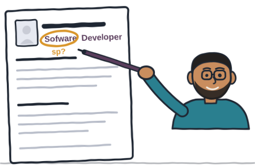
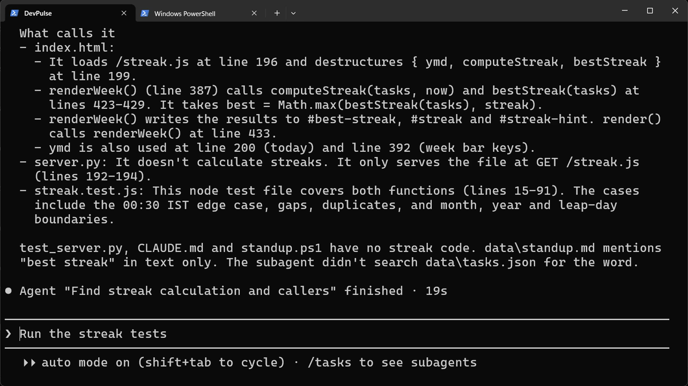
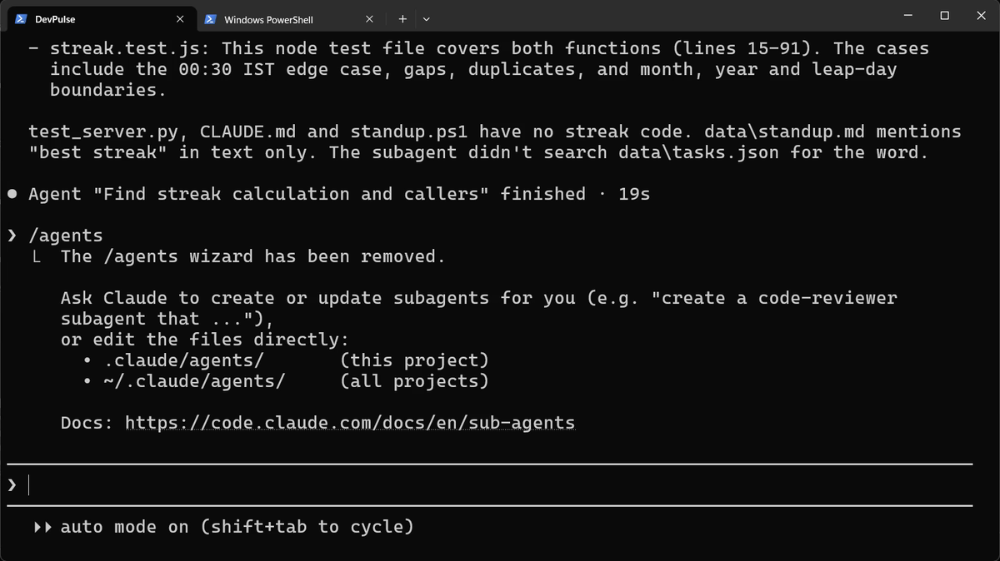
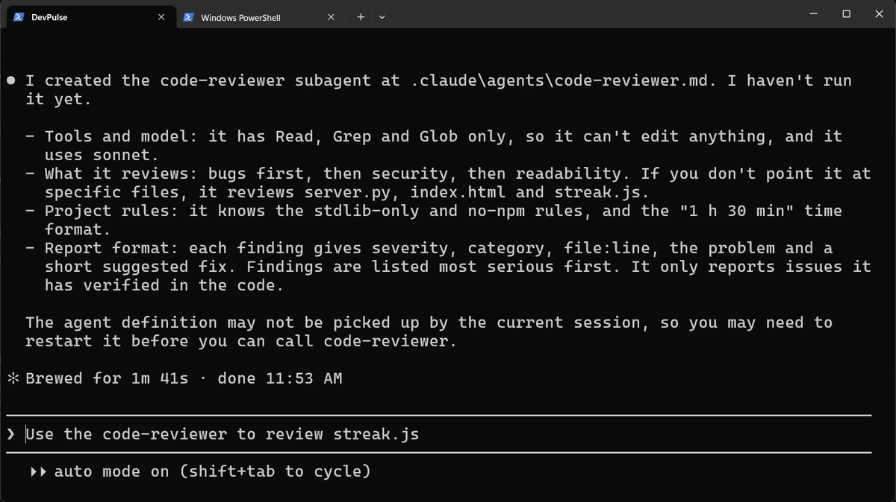
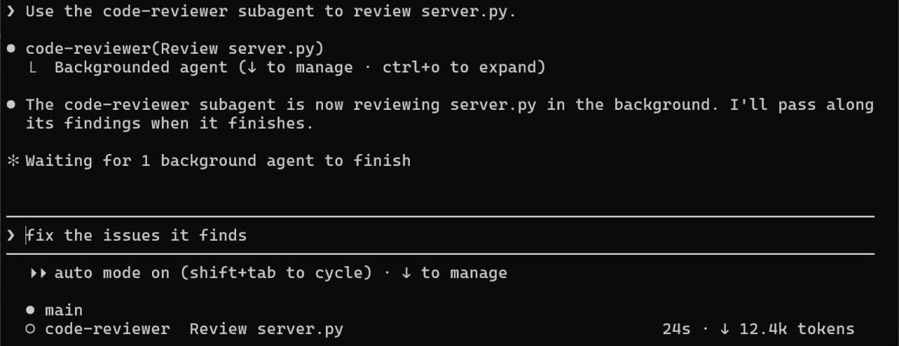
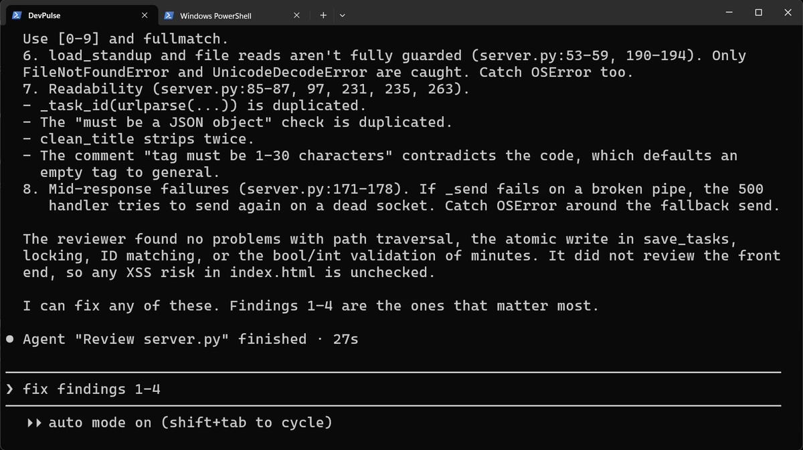
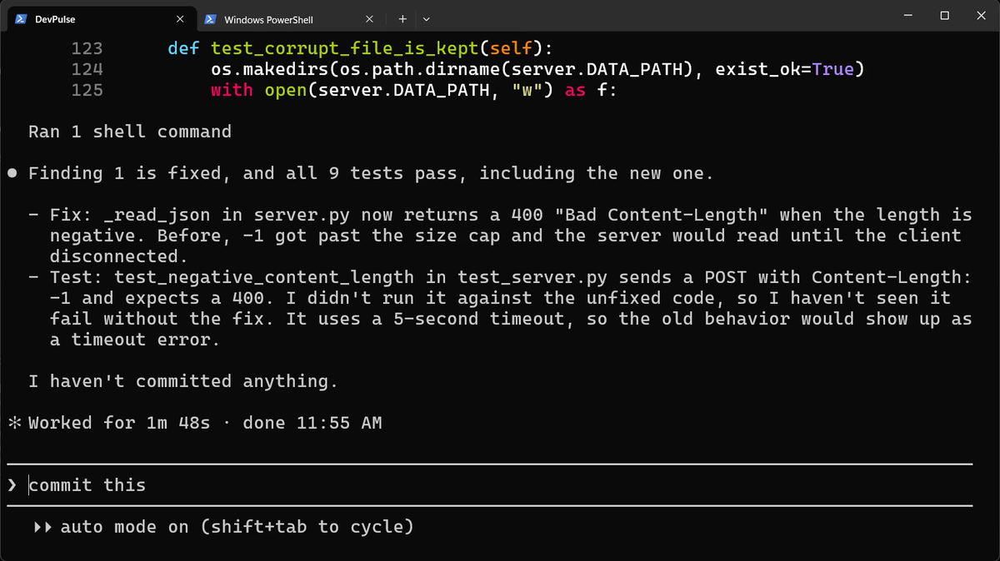

Prefer to watch? This chapter goes with Episode 9 (5:08). Open it on YouTube.
claude in your project folder.Who checks the code?
DevPulse has a server, a page, a streak and a standup now. Claude wrote most of it, and when we asked for checks, the same Claude did those too.
Say you wrote your resume and read it three times before sending it. Then a friend reads it once, and circles a spelling mistake in the very first line. You kept reading what you meant to write; your friend reads only what is on the page. And your friend does not rewrite it: they mark the mistake, and you fix it.

How do you get a second pair of eyes on your code, from someone who did not write it?
A helper with its own context
Claude Code can give you a friend like that. Claude can start a helper for one job, and that helper works in its own context. It starts fresh, without your long conversation, and sends back only its answer, so your own session stays short.
That helper is what Claude Code calls a subagent. One is built in: Explore, which only reads.

Make your own reviewer
You may know /agents from older guides. In this version, it tells you to ask Claude instead.

.claude/agents/. Personal ones, for every project, live in ~/.claude/agents/.
A new subagent may not be seen by the session that made it. Type /exit, then start claude again. That is what we did.
Ask for the review
Call the reviewer by its name, and give it one file.


Eight findings is a lot to fix at once. Take the most serious first, and one at a time, so each fix gets its own test.
Fix the first one, with a test
Our server has had its own tests since chapter 2, in test_server.py. Ask Claude to fix finding 1, add one more test, and run them all.

Read the honest line: it never saw the new test fail. A test you never saw fail may not test anything. We committed the fix with /commit-commands:commit. The commit left our new .claude/agents/code-reviewer.md out; we committed it ourselves, so anyone who clones the project gets the reviewer too.
What a subagent costs
A subagent has its own context, so it uses its own tokens. In our run, Explore used 26.0k tokens for one search, and the reviewer 12.6k for one file: the counts on the bottom line while each one works. A review of one file is cheap, but a review of the whole project is not.
Our reviewer reads every line of DevPulse, but it has never seen DevPulse on a screen. In the next chapter, Claude opens it in a real browser, at the size of a phone. Claude Code does that through what it calls an MCP server.
Quick reference
The prompts from this chapter, ready to copy: every prompt, chapter 9.
| Command or key | What it does | Use it when |
|---|---|---|
Use the Explore subagent to find … | A read-only helper searches the code and reports back | You need to know where something is, without filling your session |
Create a project subagent called … in .claude/agents/….md | Writes the subagent's file for you | You want the same kind of helper again and again |
Read-only tools (Read, Grep, Glob) | The subagent can look, but not change anything | A reviewer should report, not edit |
Use the code-reviewer subagent to review file | Runs your subagent on that file | Before you commit a change |
/exit, then claude | Starts a new session that sees the new subagent | Claude says it may not pick the subagent up yet |
Fix finding 1 and add a test for it | Acts on one finding at a time | The review lists more than one problem |
Fix finding 2, and see the test fail first
The goal: act on the next finding, and trust its test.
First: in your own project, make a read-only reviewer and run it on one file.
Then: for its second finding, ask Claude: Write a test for finding 2 and run it before you fix anything. Then fix it and run the tests again.
Guess first: will the new test fail before the fix?
One question for you: what other helper would you give its own subagent?
References
Where each command and file on this page comes from. Every screenshot is from our own recording on 29 Oct 2026, Claude Code 2.1.312.
- Anthropic · Subagents in Claude Code What a subagent is, the built-in Explore agent, project subagents in .claude/agents, and their tools and model. https://code.claude.com/docs/en/sub-agents
- My own recording · 29 Oct 2026, Windows 11 Explore answered in 19 seconds; the review took 27 seconds and found 8 issues; the fix passed all 9 server tests, the new one included.
New chapters and episodes come out every week. Follow along on YouTube or the WhatsApp channel. Questions? Ask under the video on YouTube; I read every comment.